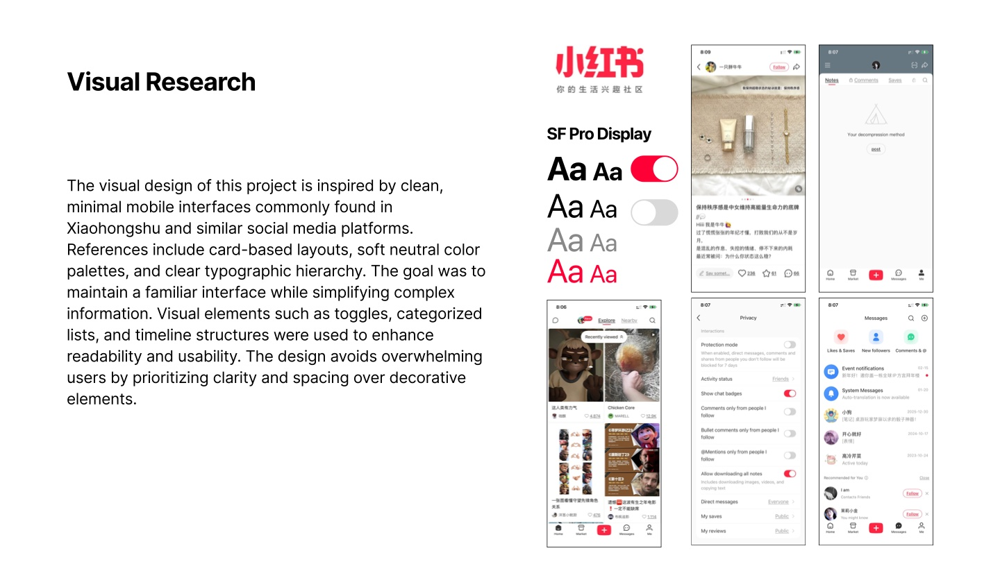
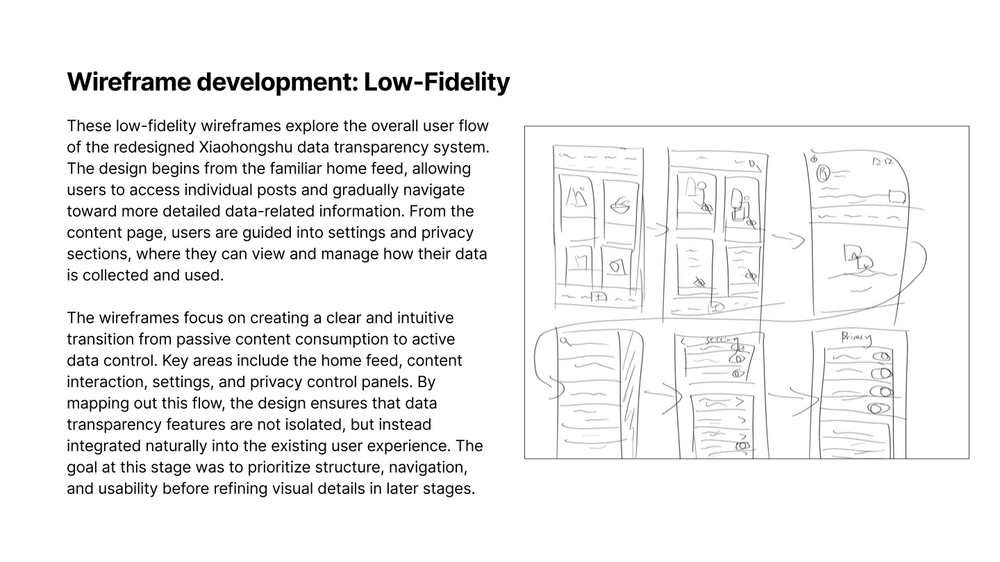
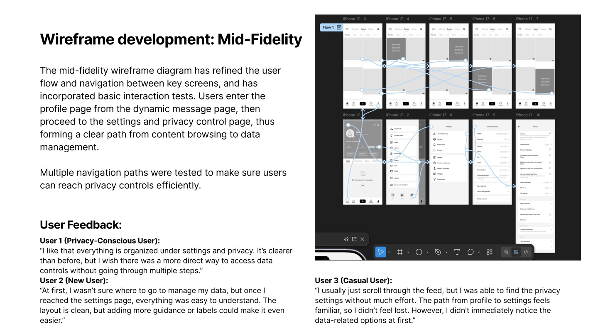
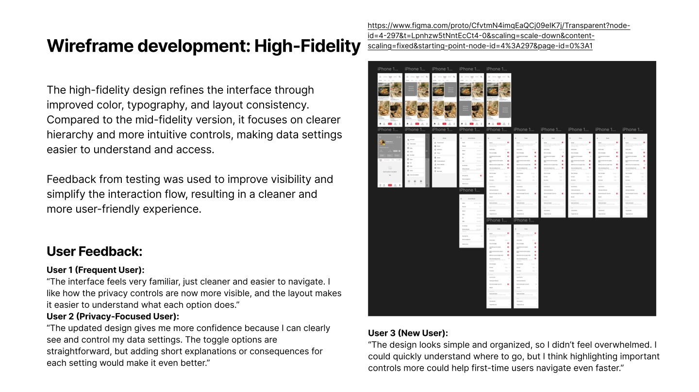
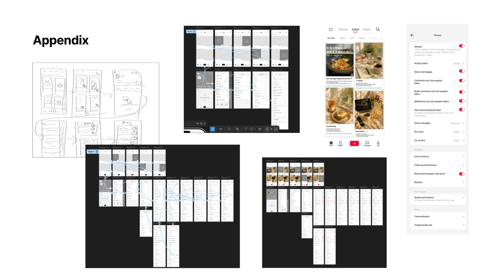

Academic concept · UX research & prototyping
Xiaohongshu Data Transparency
A concept redesign that helps Xiaohongshu users find privacy controls and understand how their activity shapes recommendations and ads.
Try the Figma prototypeProject brief
People browse, like, and search on Xiaohongshu without always knowing how those actions influence their recommendations and ads. I explored a centralized Data Transparency Dashboard to show what data is collected, why it is used, and which settings people can change.
The design challenge was to make privacy controls discoverable from the existing app and help people anticipate the effects of a setting before they change it.
User and opportunity research
The project focused on people who use Xiaohongshu to discover lifestyle, food, fashion, and product recommendations. Personalization is useful to this audience, but the project research identified concerns around tracking, unclear data use, and limited control over recommendations.
I reviewed how the app organizes privacy settings. Data-related information was spread across different menus and relied heavily on text. That suggested three design opportunities: bring related controls together, explain why information is used, and give people clearer feedback when they make a change.
Visual research
I studied Xiaohongshu and similar mobile interfaces to keep the redesign familiar. Cards and categorized lists helped group related settings, while neutral surfaces, clear headings, and familiar toggles kept attention on the choices. I also explored timelines as a way to represent activity in sequence.


Low fidelity · Map the route
I sketched how someone could move from the home feed and individual posts into settings and privacy. Working at low fidelity let me focus on the sequence of screens and how the privacy feature fit into familiar navigation.


Mid fidelity · Test discoverability
I built a clickable flow through Profile, Settings, and Privacy and explored multiple routes to the data controls. Feedback helped distinguish two problems: finding the right settings page and noticing the relevant options after arriving.
- A privacy-conscious participant wanted a more direct route.
- A new user understood the options once they arrived but wanted clearer labels or guidance along the way.
- A casual user found the Profile-to-Settings route familiar but initially missed the data-related controls.


High fidelity · Refine the controls
I refined color, type, and layout consistency and gave the privacy controls a clearer visual hierarchy. The final prototype connects the familiar feed and profile to a more organized privacy area with categorized controls.
Feedback on the high-fidelity version described the controls as more visible and the toggles as straightforward. Participants still wanted important settings to stand out more and short explanations of what each toggle changes.


Outcome and next steps
The result is a Figma concept prototype. A next iteration would explore more direct entry points and test short consequence previews beside key controls, so people can tell what a change means before acting.


References
The original report drew on Xiaohongshu, Apple Privacy, Google Safety Center, Nielsen Norman Group’s user-control guidance, and audience context from Statista and Zhihu. The report credits ChatGPT for generating example post images.